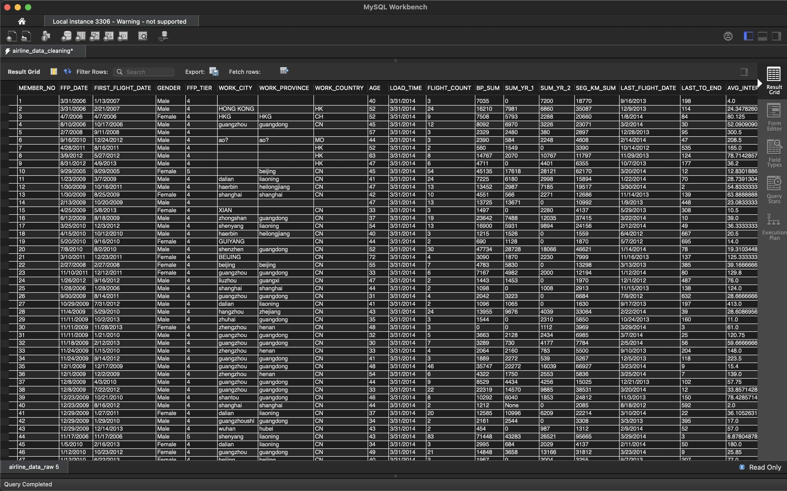
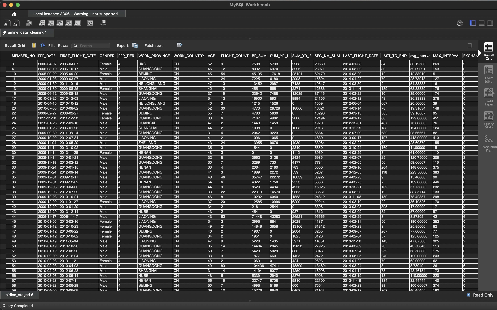

Project 2 -
Airline Customer Data
Data Set: Press Here
GitHub File: Press Here
Tableau: Press Here
Overview:
This project involves the cleaning and preparation of an airline customer dataset using SQL, which consists of customer information and activity spanning up to 2014. Key attributes include membership details, geographical data, flight frequency, and revenue generation. The goal of this project was to standardise and clean the dataset by handling null values, removing unnecessary columns, adjusting data types, and ensuring consistency for further analysis in Tableau. This project is highly relevant for customer segmentation analysis, which can be used for customer lifetime value (CLV) and RFM analysis in the airline industry.
Key Skills Used:
• SQL data manipulation: `SELECT`, `INSERT`, `UPDATE`, `DELETE`, `ALTER TABLE`
• Data cleaning: removing duplicates, handling NULL values, trimming whitespace
• Data transformation: converting data types, handling dates, standardising values
• Data validation: removing invalid records, conditional updates
• Data visualisation: presenting data sets into impactful and comprehensible visualisations, creating dashboards
Dataset Description:
The dataset features customer data and aggregated activity records up to 2014. Key attributes include inaugural flight date, membership tier, geographical location, flight frequency, and revenue generated within the previous year window and subsequent year window. Several rows contain invalid data, null values, and unnecessary columns that need to be cleaned to ensure accurate analysis.
Why This Project is Worth Doing:
This project highlights essential SQL data cleaning skills critical for analysing flight data. By ensuring the accuracy, consistency, and relevance of customer and activity records, the project lays the groundwork for meaningful insights and visualisations. Additionally, it addresses the complexities of handling real-world messy data, which is pivotal before progressing to visual analysis in Tableau.
Step-by-Step Guide for Data Cleaning:
- Selecting All Records from the Raw Airline Data:
SELECT * FROM airline_data_raw; - Creating a Staging Table:
CREATE TABLE airline_staged LIKE airline_data_raw; - Copying Data to the Staging Table:
INSERT INTO airline_staged SELECT * FROM airline_data_raw; - Dropping Unnecessary Columns:
ALTER TABLE airline_staged DROP COLUMN WORK_CITY;ALTER TABLE airline_staged DROP COLUMN LOAD_TIME; - Displaying the Contents of the Staging Table:
SELECT * FROM airline_staged; - Trimming Whitespace from Specified Columns:
UPDATE airline_staged SET MEMBER_NO = TRIM(MEMBER_NO), FFP_DATE = TRIM(FFP_DATE), FIRST_FLIGHT_DATE = TRIM(FIRST_FLIGHT_DATE), GENDER = TRIM(GENDER), FFP_TIER = TRIM(FFP_TIER), WORK_PROVINCE = TRIM(WORK_PROVINCE), WORK_COUNTRY = TRIM(WORK_COUNTRY), AGE = TRIM(AGE), FLIGHT_COUNT = TRIM(FLIGHT_COUNT), BP_SUM = TRIM(BP_SUM), SUM_YR_1 = TRIM(SUM_YR_1), SUM_YR_2 = TRIM(SUM_YR_2), SEG_KM_SUM = TRIM(SEG_KM_SUM), LAST_FLIGHT_DATE = TRIM(LAST_FLIGHT_DATE), LAST_TO_END = TRIM(LAST_TO_END), AVG_INTERVAL = TRIM(AVG_INTERVAL), MAX_INTERVAL = TRIM(MAX_INTERVAL), EXCHANGE_COUNT = TRIM(EXCHANGE_COUNT), avg_discount = TRIM(avg_discount), Points_Sum = TRIM(Points_Sum), Point_NotFlight = TRIM(Point_NotFlight); - Displaying the Contents After Trimming:
SELECT * FROM airline_staged; - Removing Rows with Unwanted Symbols:
DELETE FROM airline_staged WHERE WORK_PROVINCE REGEXP "[0-9#\\-\\*\\.,!]"; - Removing Rows with Empty or Null Critical Fields:
DELETE FROM airline_staged WHERE TRIM(MEMBER_NO) = '' OR MEMBER_NO IS NULL OR TRIM(FFP_DATE) = '' OR FFP_DATE IS NULL OR TRIM(FIRST_FLIGHT_DATE) = '' OR FIRST_FLIGHT_DATE IS NULL OR TRIM(GENDER) = '' OR GENDER IS NULL OR TRIM(FFP_TIER) = '' OR FFP_TIER IS NULL OR TRIM(WORK_PROVINCE) = '' OR WORK_PROVINCE IS NULL OR TRIM(WORK_COUNTRY) = '' OR WORK_COUNTRY IS NULL OR TRIM(AGE) = '' OR AGE IS NULL OR TRIM(FLIGHT_COUNT) = '' OR FLIGHT_COUNT IS NULL OR TRIM(BP_SUM) = '' OR BP_SUM IS NULL OR TRIM(SUM_YR_1) = '' OR SUM_YR_1 IS NULL OR TRIM(SUM_YR_2) = '' OR SUM_YR_2 IS NULL OR TRIM(SEG_KM_SUM) = '' OR SEG_KM_SUM IS NULL OR TRIM(LAST_FLIGHT_DATE) = '' OR LAST_FLIGHT_DATE IS NULL OR TRIM(LAST_TO_END) = '' OR LAST_TO_END IS NULL OR TRIM(AVG_INTERVAL) = '' OR AVG_INTERVAL IS NULL OR TRIM(MAX_INTERVAL) = '' OR MAX_INTERVAL IS NULL OR TRIM(EXCHANGE_COUNT) = '' OR EXCHANGE_COUNT IS NULL OR TRIM(avg_discount) = '' OR avg_discount IS NULL OR TRIM(Points_Sum) = '' OR Points_Sum IS NULL OR TRIM(Point_NotFlight) = '' OR Point_NotFlight IS NULL; - Removing Rows with Unwanted Characters in WORK_PROVINCE:
DELETE FROM airline_staged WHERE WORK_PROVINCE REGEXP '[^A-Z ]'; - Replacing Invalid Data with NULL in AGE:
UPDATE airline_staged SET AGE = NULL WHERE AGE < 0 OR AGE > 100; - Converting WORK_PROVINCE Values to Uppercase for Consistency:
UPDATE airline_staged SET WORK_PROVINCE = UPPER(WORK_PROVINCE); - Removing Invalid Date Records:
DELETE FROM airline_staged WHERE LAST_FLIGHT_DATE LIKE '%2014/2/29%'; - Converting Date Columns to Proper Format:
UPDATE airline_staged SET FFP_DATE = STR_TO_DATE(FFP_DATE, '%m/%d/%Y'), FIRST_FLIGHT_DATE = STR_TO_DATE(FIRST_FLIGHT_DATE, '%m/%d/%Y'), LAST_FLIGHT_DATE = STR_TO_DATE(LAST_FLIGHT_DATE, '%m/%d/%Y'); - Modifying Data Types of Specific Columns:
ALTER TABLE airline_staged MODIFY COLUMN FFP_DATE DATE, MODIFY COLUMN FIRST_FLIGHT_DATE DATE, MODIFY COLUMN LAST_FLIGHT_DATE DATE, MODIFY COLUMN AGE INT, MODIFY COLUMN SUM_YR_1 INT, MODIFY COLUMN SUM_YR_2 INT, MODIFY COLUMN avg_discount DECIMAL(10, 5), MODIFY COLUMN avg_interval DECIMAL(10, 5); - Displaying the Final Contents of the Staging Table:
SELECT * FROM airline_staged; - Final Check of Raw and Staged Data:
SELECT * FROM airline_data_raw;
 Final Result:

Tableau
Now that the flight dataset has been thoroughly cleaned and prepared, it is ready for visualisation. By building an interactive dashboard, we can effectively explore and highlight the relationships between key metrics such as flight frequency, customer age groups and genders and geographic distribution. The following five visualisations have been created:
Visualisations:
1. Activity by Province: A heat map showing provinces with the highest flight activity. Larger bubbles represent more flights, making it easy to spot high-traffic regions. This can help identify regional demand for flights.
2. Flight count by Age Group: A pie chart breaking down flight activity by age group. This helps reveal which age demographics travel the most, providing insights into customer behaviour across different life stages.
3. Flight count by Gender: A sideways bar graph comparing flight counts between males and females. This visualisation offers a clear view of gender-based travel patterns.
4. Flight count by Gender and Age Group: Expands the previous visualisation by further breaking down flight counts by age group, giving a deeper look into gender and age-related trends.
5. Flight Activity Trends Over Time: A line chart tracking flight counts over time by first flight year. This visualisation shows when different groups first started flying and highlights trends in flight activity over the years, helping identify travel preferences, economic factors affecting flight decisions and the success of promotions aimed at first-time flyers.

CONCLUDING REMARKS
This project has been a pivotal experience in applying my SQL data manipulation skills, particularly in data cleaning and visualisation. By effectively handling missing values, invalid records, and unnecessary columns, I showcased my keen attention to detail and commitment to data integrity, which are essential qualities for any data analyst. This experience reinforced my understanding of the importance of having clean, accurate data for reliable analysis. The process of visualising flight trends and customer demographics in Tableau has enhanced my ability to present complex information in an accessible manner, allowing stakeholders to make informed decisions based on clear, actionable insights.
Understanding the nuances of flight activity among different age groups and genders has further illustrated my capability to analyse customer behaviour, which is vital for roles focused on customer segmentation and targeting. As I continue to refine my analytical and storytelling skills, I am eager to leverage these experiences in a professional setting, driving impactful decisions through data analysis. This project highlights my technical expertise and problem-solving abilities in transforming data into actionable insights.